Mravenci jak je neznáme
- vztahy mravence a dalšího hmyzu
VojtěchKopecký,RobinJánosMorvai
V6A;GymnáziumDěčín2024
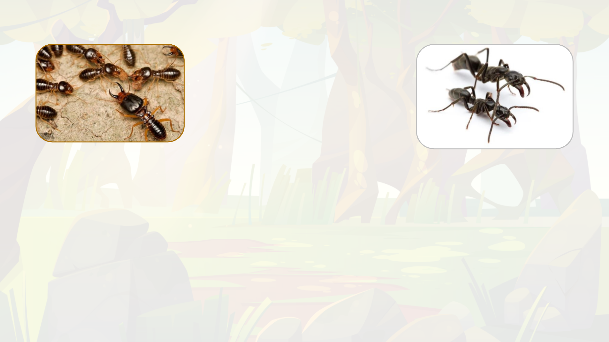
Mravencijsouhlavnímipredátorytermitů.Jsoutomrchožroutiapredátoři, předevšímmravenčílarvypotřebujístravu
bohatounabílkoviny.
Jetovelmistarývztah,mravencilovícítermitybylinalezeniiv jantarustarém130milionůlet.
Tentovztahpredátor–kořistsevyskytujepouzetam,kdesevyskytujímravenciatermitizároveň,tedyhlavně
v tropickýchoblastechAfriky,AustrálieaJižníAmeriky.Nejdeokonkrétnídruh,nýbržocelouskupinučítajícíněkoliktisíc
druhů,uvádímetedypříkladytěchznámějšíchainašepopisovánísenedržíkonkrétnětěchtodruhů,alejevů
vyskytujícíchsenapříčceloutoutorozsáhlouskupinou.
Vzhledemk rozšiřovánítermitůjakoinvazníhodruhuv Evropějemožné,žebysemohltento vztah v dohlednédoběstátpoměrně
běžnýmiu nás.
Mravenci x Termiti
-Úvod
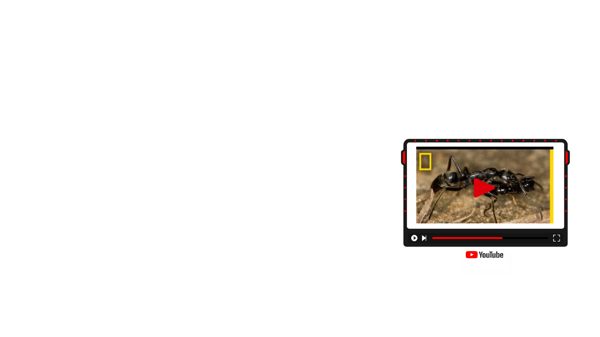
Mravenci x Termiti
-Taxonomický systém
mravenec matabele (Megaponera analis); mravenec argentinský (Linepithema humile)
kmen členovci; podkmen vzdušnicovci, třída hmyz; řád blanokřídlí, rod mravenci (Formica)
proměna dokonalá
x
termit anoplothermes (Anoplothermesbanksi)
kmen členovci; podkmen vzdušnicovci, třída hmyz; řád všekazi; podřád termiti
proměna dokonalá
Typvztahu:
Predace
Důsledky:
1. Vzhledem kvelmi rychlému množení termitů, mravenci snižují jejich počty,
čímž vkonečném důsledku uvádějí do rovnováhy množství spasené zeleně v
ekosystému.
2. Mravenčí larvy mají dostatek potravy.
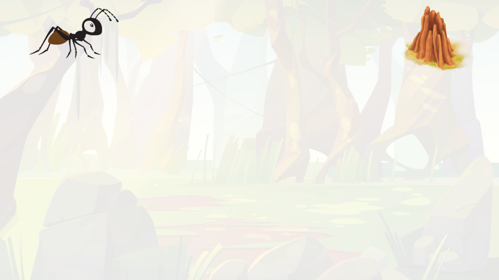
Průzkumníci identifikují přibližnou lokaci termitiště pomocí termitích feromonů, poté se vrací do mraveniště
pro posily k útoku. Do útoku se zapojují jak vojáci, tak dělníci. Vojáci vedou skupinu k termitišti pomocí feromonů.
„Armáda“ začíná hlavní útok, větší vojáci svými kusadly vytváří otvor v termitišti, menší dělníci lezou dovnitř a
útočí na komory s larvami.
Po zpozorování mravenčího útoku začnou termití vojáci narážet hlavou do země, což slouží jako varovný
signál. Zároveň začnou produkovat feromony, kterými varují vojáky i z jiných částí termitiště.
Termití vojáci jsou větší a mají větší kusadla, nicméně mravenci mají výhodu překvapivého útoku, protože
siprokousali nový vstup. Zároveň mravenci na rozdíl od termitů vykazují chování společenského boje kdy jeden
druhému „kryjí záda“ a jako skupina tedy prioritizují boj s těmi termity, kteří zrovna aktivně útočí na nějakého
mravence. Toto chování termiti ve většině případů nevykazují a jsou tak v boji méně efektivní.
Dělníci pronikají relativně hluboko do termitiště, kde loupí termití vajíčka a nymfy. Termití vojáci jsou nuceni
rozdělovat své síly kvůli útokům na vstupy od mravenčích průzkumníků a tak nikdy nezaútočí plným počtem na
místo, kde skutečně dochází k hlavnímu ohrožení.
Po konci bitvy nastupují „zdravotníci“, mravenci tedy odnášejí i své raněné.
Mravenci x Termiti
-Hlavní útok
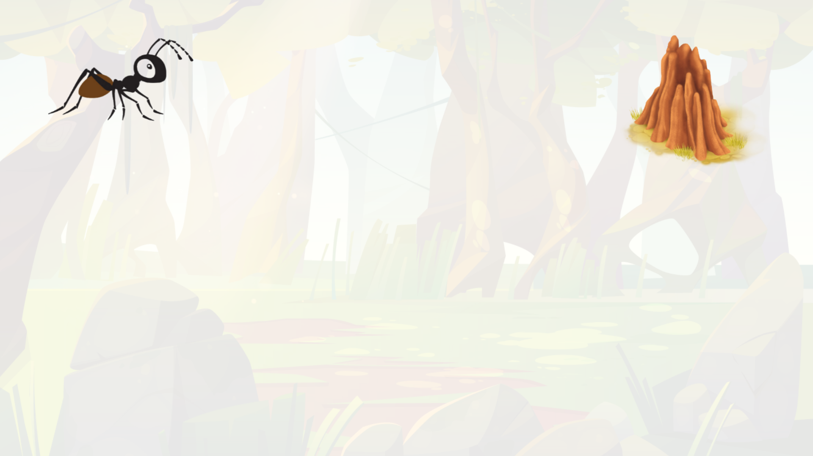
Když mravenci dorazí k termitišti vyšlou několik dělníku jako průzkum. Ten trvá zhruba hodinu.
V momentě kdy průzkumníci najdou nějaký vchod do termitiště, nevracejí se po nejkratší trase,
ale po nejrychlejší. Tedy hledají cestu takovým terénem, aby mohli zvýšit tempo a ušetřit tak
celkovou rychlost. Tímto způsobem ušetří okolo 35% doby ku nejkratší trase.
Průzkumníci, si po návratu k hlavní skupině „naverbují“ skupinku mravenců (několik stovek) a
dovedou je zpět ke vchodu, který našli. Poté se rychle přeskupí, tedy asi půl až jeden metr před
cílem počkají než dojdou poslední. Útočí na vstup, aby odvedli pozornost od hlavního útoku.
Mravenci x Termiti
-Průzkumníci
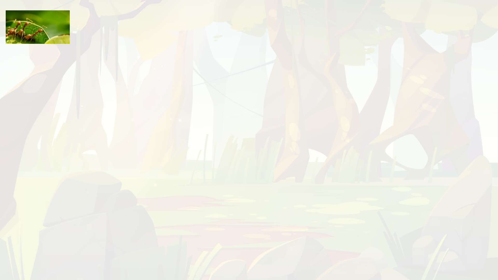
Mravenci nemají žádné vyčleněné zdravotníky. Po konci bitvy
začnou zranění mravenci vypouštět feromon, díky němuž je
najdou ostatní. Většinou raněné odnášejí spíše větší vojáci,
nicméně i menší dělníci se často zapojují.
Když mravenec není příliš zraněný, což znamená, že má více
než dvě nohy a spolupracuje při „nakládání“, mravenci ho
odnesou zpět do mraveniště.
Pokud je rána infikována, ošetřují ji slinami, které obsahují 112
sloučenin, z čehož polovina má antibakteriální nebo hojivé
účinky, význam zbylé poloviny zůstává
neznámý.V experimentech izolovali zraněné vojáky tedy se jim
nedostalo léčby a 90 % z ich zemřelo, s šetřením je to 22 %.
Mravenci x Termiti
-Zdravotníci
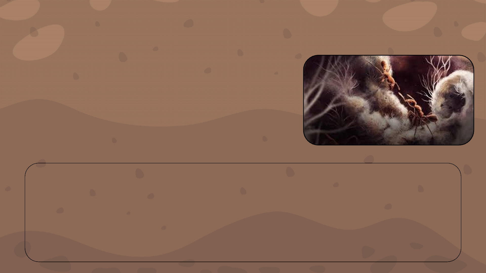
Jde o vztah, kdy si mravenci „farmaří“ chovají houbu většinou
zčeledi pečárkovité. Tento mutualismus (tedy symbiózu, na
které jsou obě strany závislé) má celý Tribus attani tedy mnoho
příbuzných rodů mravence, stejně tak jde o vícero konkrétních
druhů hub.
Z generace na generaci
Každá nové královna si ze svého mateřského mraveniště vezme kousek této houby, se kterou založí novou
kolonii. Jen tak může založit nové mraveniště, protože tyto druhy hub se mimo mravenčí společenství již
nevyskytují.
Houba je plně závislá na péči mravenců, protože jí nosí potravu. Na oplátku vytváří specializované
spory zvané gongylidia, které jsou bohaté na proteiny a tuky. Gongylidia jsou výhradní potravou
těchto mravenců.
Mravenci x Mycelium
-Úvod

Attini mravenec
kmen: členovci; podkmen: vzdušnicovci, třída: hmyz;
řád: blanokřídlý, čeleď: mravencovití, tribus: (Attini)
proměna dokonalá
x
Houba z čeledi pečárkovitých
říše: houby; třída: vřeckovýtrusné, čeleď:pečárkovité
(ve skutečnosti 47 druhů s odobnou symbiózou)
Typvztahu:
obligátní symbióza -
mutualismus
(oboustranná úplná závislost)
Důsledkyvztahu:
1) přežití druhů hub, které
se mimo tento
symbiotický vztah
nevyskytují
2) díky sbírání rostlinného
materiálu z živých stromů
může v okolí mraveniště
dojít kezničení populace
stromů, které jsou
postupně obrány o
všechny listy, kvůli čemuž
umírají.
Střihači listů
= zahrnující termín pro mravence pěstující houby.
Mravenci x Mycelium
-Taxonomie
Najejichtzv.mravenčíchzahrádkáchsestarajíosvouhoubunejentím,žejí
dodávajípotřebnýbiomateriál,aletakévytrhávajíhyfyparazitníchhub,bráníji
předmuškamiadokoncepřesazujímladéhyfydonovýchčástímraveniště,čímž
rozpínajísvézahradydonovýchčástímraveniště.
Mravenčí antibiotika
Mimomechanické„plení“houbovýchzahradmajítakédělníci,kteří
sestarajíozahradypokrytétělobílímsekretem,vekterémjsou
bakterieprodukujícíformuantibiotik.
Dlerozborůažzpolovinystejnéstrukturyjakonašeantibiotika.Při
experimentech,kdyseoddělilamyceliatěchtomravenčíchzahradod
dělníků,(Tedyhoubunikdo„neplel“anineošetřoval
antibakteriálnímsekretem)bylyhoubydo3dnůúplnězlikvidovány
ostatnímiplísněmi,coždokazujemíruzávislostinapéčimravenců.
Budoucnost pro lidi?
Tento druh farmaření se
vyvinul při nukleární zimě po
vymření dinosaurů, tedy už
před 60 miliony lety, a přesto
tu nepozorujeme resistenci
škůdcůvůči těmto
antibakteriálním látkám. Tuto
skutečnost si uvědomilo
několik vědeckých týmů a
proto studují, čím je to
způsobeno. Na to ve
skutečnosti není tak těžké
odpovědět, je to tím, že
stejně jako se vyvíjí patogeny
se vyvíjí i mravenčí antibiotika.
Jenže to je vlastnost, která
nám se zatím nedaří a
rozklíčovat, jak je možné, že
jsou v tom mravenci tak
úspěšní by nám mohlo do
budoucna tomuto problému
rezistence antibiotikům
předcházet.
Mravenci x Mycelium
-Starost o houbu
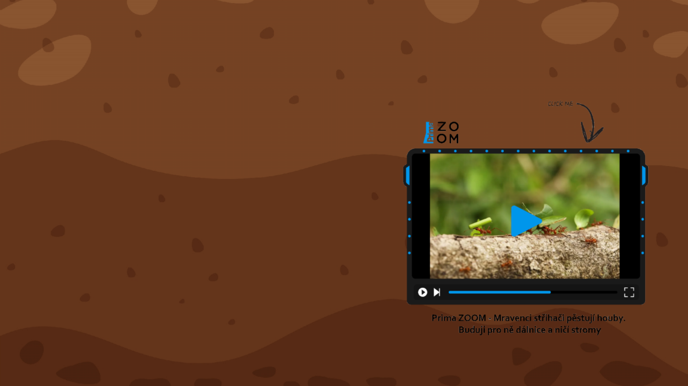
Mravenci x Mycelium
-Potrava houby
Mravencihledajíavybírajíspecifickédruhya
kvaliturostlin.Kdyžtakovourostlinu
najdou,okoušílistíavhustýchkolonáchdělníků
nosíkusylistůaž10xtěžšínežonisamido
mraveniště.Odtudodbornícivyužívají
zahrnujícíhotermínu„střihačilistů“.
Dokonceihoubasamavelicesložitým
systémemferomonůkomunikujesmravencia
„diktujesi“cojímajínosit.Dělátoztoho
důvodu,ženěkterérostlinyvoblastisenaučili
vypouštětdookousávanýchlistůtoxiny,které
houbuoslabujíažbyeventuálnězemřelana
vnějšívliv,protožebysenezvládlabránit.
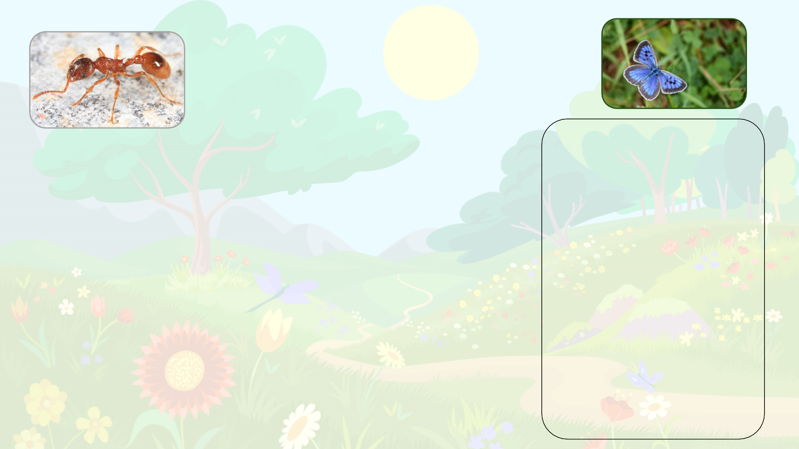
Mravenci x Modrásci
-Taxonomie
Typvztahu:
parazitismus/predace
Důsledkyvztahu:
1) V mraveništi nachází
housenka na určitou dobu
útočiště, ze kterého
následněvylétá jako dospělý
motýl.
2) Dojde k úbytku
potravypromravenčí larvy
nebo jejichpřímélikvidaci,
díky čemuž sepřivětším
počtu housenek
vjednommraveništi může
narušitjehovnitřní
rovnováha a chod.
mravenec žahavý (Myrmica rubra)
kmen: členovci; podkmen: vzdušnicovci, třída: hmyz; řád: blanokřídlí; rod: mravenci
(Formica)
proměna dokonalá
X
rod modrásků Phengaris (Phengaris)
kmen: členovci; podkmen: vzdušnicovci, třída: hmyz; řád: motýli; {skupina denní}
proměna dokonalá
Mravenci x Modrásci
-vniknutí mezi mravence
Jak modrásci oklamou mravence?
Po třetím svléknutí se housenky modrásků rodu Phengaris prokoušou ven ze semeníku, kde trávily poslední dny svého života.
Začnouprodukovatferomonypodobnéferomonůmmravenců,díkykterýmjemravencinajdouazanesoudomraveniště.Tamvolí
čtyřirůznéstrategie:
1) Chovajísejakoparazitéanechávajísemravenci,kteříjepravděpodobněpovažujízasvépotomstvokrmit.
2) Začnoupožíratlarvyhostitelskýchmravenců.
3) Střídavědělajíobojejižzmíněné.
4) Některé druhy(Phengarisalconf.rebeli)dokonce dokážístridulovat (třením nohou vytvářet cvrkavý zvuk) jako mravenčí
královny,díkyčemužsejimdostávávýbornéobsluhy.
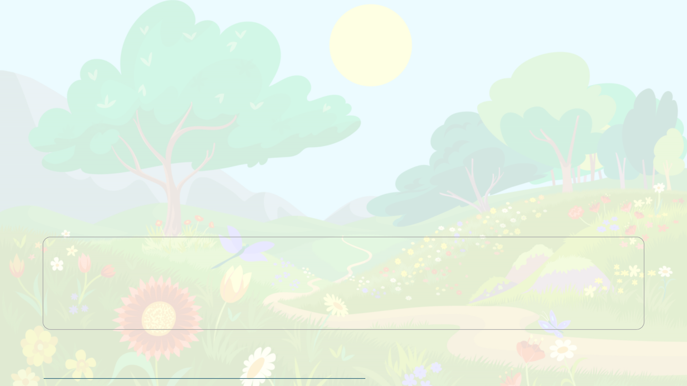
Mravenci x Modrásci
-úprk z kolonie
Nebezpečná cesta z mraveniště
Pourčitédoběsehousenkavmraveništizakuklí,kdyžkukluopouštíjakodospělýmotýl,nastávájednaznejnebezpečnějšíchfází
jejího života.Feromonováochranapřestávápůsobitamravenciidentifikujípotenciálníhonepřítele.Modráscijsouprotitéto
hrozběvybavenivelkýmmnožstvímštětin,kterépokrývajíjejichtělo,tynaurčitoudobu zalepímravencůmkusadla,neboje
nenechají proniknout až ke tkáním modráska. I díky této ochraně mají modrásci při cestě z mraveništěvysokou úmrtnost,
napříkladumodráskaočkovaného(Phengaristeleius)nepřežijeúnikaž80%dospělýchmotýlů.
Proč Mravenci zlomyslné housenky hostí?
Otom,pročhousenkymravencetakpřitahujísemůžemezatímspíšedohadovat,výzkumyalepotvrdily,žemravencizachraňujíhousenkyvpřípadě
nebezpečípřednostně.Některéteoriehovoříojižzmíněnézáměnězavlastnípotomstvodíkyferomonům,kterésihousenkyvprůběhuevoluce
vytvořily.Jinéteoriepokládajízadůvodsladkoušťávu,kterouhousenkyvylučují(podobnoušťávuvyměšujíimšice,alevytváříjizesvérostlinnépotravy,
nezpotravypromravenčílarvy,kteroumodráscipřiprocesutráveníoberouovětšinublahodárnýchlátek).Nakaždýpádsenejednáovděčnéhohosta,
ukteréhonedokážímravencidoposledníchvíleodhalitskutečnéúmysly.
Zajímávásvíce?
Doporučujemerozkliknoutodkaz,kdesemůžetedozvědětdalšíinformace.
https://ziva.avcr.cz/files/ziva/pdf/fascinujici-tezkost-souziti-nasich-specializovanyc.pdf
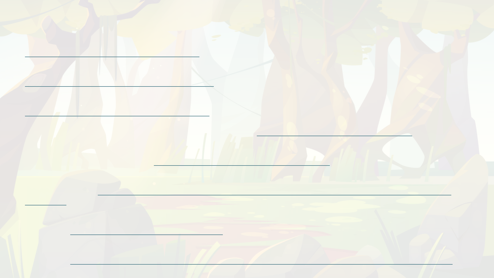
ZdrojekMravencixTermiti:
KRONAUER,Daniel.In:Antwiki.com[online].2020[cit.2024-05-01].Dostupnéz:
https://www.antwiki.org/wiki/Megaponera_analis
Ants Attack Termite Mounds | Natural World: Ant Attack | BBC Earth [online]. [cit. 2024-04-22]. Dostupné z:
https://www.youtube.com/watch?v=0ZEGWWkpbX8
Termites vs Ants: Who’s King of the Hill? | Wild to Know [online]. 2020 [cit. 2024-04-22]. Dostupné z:
https://www.youtube.com/watch?v=nESFGpQH6-U
Mravenci vs Termiti [online]. 2019 [cit. 2024-04-22]. Dostupné z: https://sciencemag.cz/mravenci-vs-termiti/
LANGIN, Katie. SCIENCE MAGAZINE AAAS. Ants treat comrades injured on the field of battle.Science magazine AAAS online].
2018 [cit. 2024-04-22]. Dostupné z: https://www.youtube.com/watch?v=LESPHl8rOvI
KOUDELKA, David. ČESKO ŽIVĚ.CZ.Mravenci se po boji vzájemně ošetřují. Používají k tomu i antibiotika online]. 2024 [cit. 2024-
04-23]. Dostupné z: https://www.ceskozive.cz/2024/01/05/mravenci-se-po-boji-vzajemne-osetruji-pouzivaji-k-tomu-i-
antibiotika/
Megaponera. In:Wikipedia: the free encyclopedia online]. San Francisco (CA): Wikimedia Foundation, 2001- [cit. 2024-04-23].
Dostupné z: https://en.wikipedia.org/wiki/Megaponera
SMITH, Kiona N. In wars with termites, ants rescue and care for their wounded. ArsTechnica [online]. 2018 [cit. 2024-05-01].
Dostupné z: https://arstechnica.com/science/2018/02/in-wars-with-termites-ants-rescue-and-care-for-their-wounded/
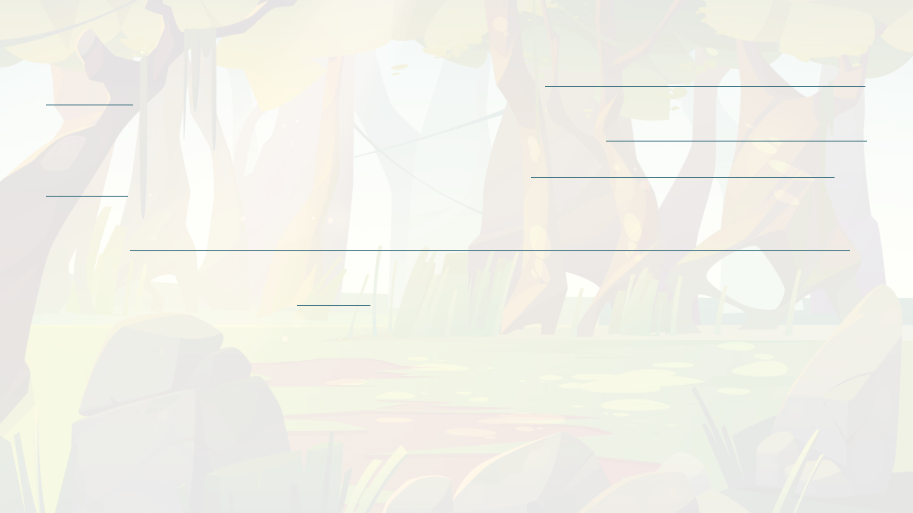
ZdrojekMravencixModrásci:
OmodráscíchroduMaculinea[online].In:.[cit.2024-05-01].Dostupnéz:https://bohemiaorientalis.cz/o-modrascich-rodu-
maculinea-2/
Tom Murray. Myrmica rubra. In: Antwiki.com [online]. [cit. 2024-05-01]. Dostupné z: https://antwiki.org/wiki/Myrmica_rubra
O modráscích a mravencích [online]. 2022 [cit. 2024-05-01]. Dostupné z: https://bohemiaorientalis.cz/o-modrascich-a-
mravencich/
Modrásci se vyvíjejí z kukly uvnitř mraveniště. Bojují při tom o holý život. Online. 2022. Licence: Český rozhlas.
Dostupnéz:https://plzen.rozhlas.cz/modrasci-se-vyvijeji-z-kukly-uvnitr-mraveniste-bojuji-pri-tom-o-holy-zivot-8867436.
[cit. 2024-05-02].
Živa. Online. 2017. 2017. Dostupné z:ziva.avcr.cz. [cit. 2024-05-02].
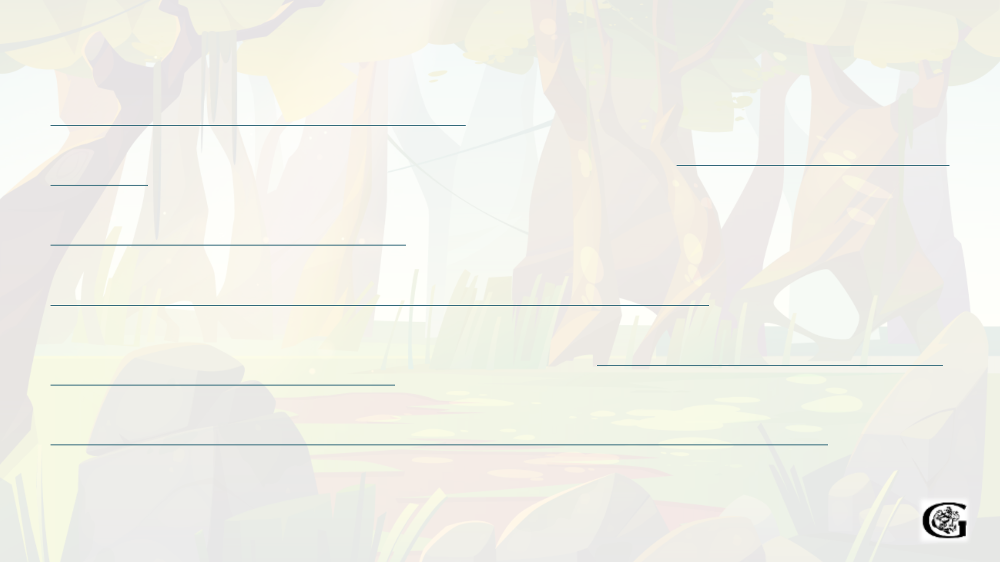
ZdrojekMravencixMyceliumPečárkovitých:
Leafcutter Ants - the First Agriculture online]. 2006 [cit. 2024-04-23]. Dostupné z:
https://youtu.be/RH3KYBMpxOU?si=G8E9CGT_RtCpswtB
PBS EONS.When Ants Domesticated Fungi online]. 2022 [cit. 2024-04-23]. Dostupné z: https://www.youtube.com/watch?v=-
XuPtW8lBCM
SEMECKÝ, Petr.Mravenci střihači pěstují houby. Budují pro ně dálnice a ničí stromy online]. 2022 [cit. 2024-04-23]. Dostupné z:
https://zoom.iprima.cz/priroda/mravenci-strihaci
Mechanismy začlenění myrmekofilů do hostitelské kolonie online]. Praha, 2017 [cit. 2024-04-23]. Dostupné z:
https://dspace.cuni.cz/bitstream/handle/20.500.11956/91813/120279697.pdf?sequence=1 . Diplomová práce. Karlova
Univerzita.
WILD, Alexander. In: News.wisc.edu [online]. [cit. 2024-05-02]. Dostupné z: https://news.wisc.edu/set-in-amber-fossil-ants-
help-reconstruct-evolution-of-fungus-farming/
WILD, Alexander. Texan leafcutter ant. In: National geographic [online]. [cit. 2024-05-02]. Dostupné z:
https://www.nationalgeographic.com/science/article/how-leafcutter-ants-evolved-from-farmers-into-cows
Autoři:VojtěchKopecký,RobinJánosMorvai
V6A;GymnáziumDěčín2024